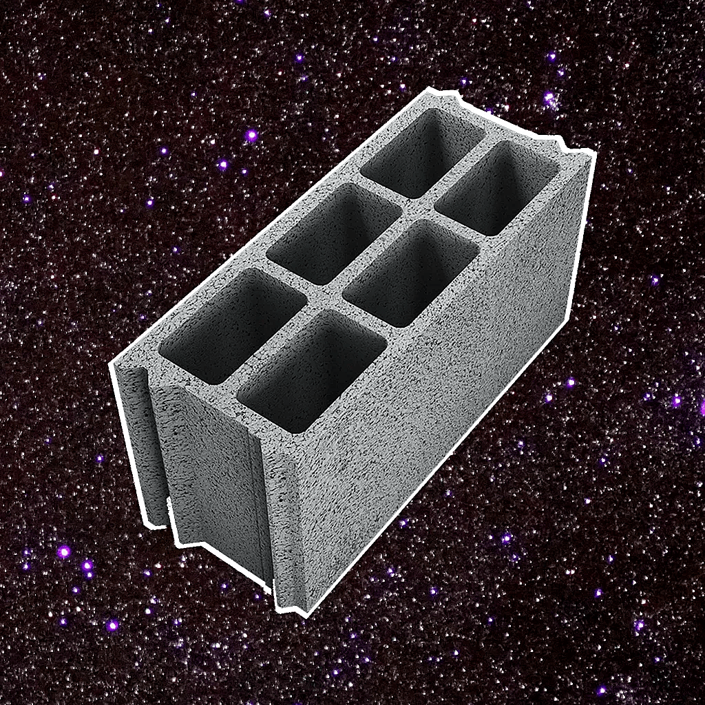
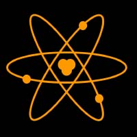

Cankyre.github.io
This website. Contains a "goto" feature, a request/report form and a status page. Also contains cards for every project I code. HTML CSS JS
Rdparpaing.github.io

A website made for an online friends community. Contains a homepage with a beautiful DVD-like animation. Also has some "inside-jokes" webpages used for memes from the community. HTML CSS JS
NyaScript

A programming language with a syntax you have never seen before. Version 1 is based on a brainfuck derivative with some, pretty unusual aliases for the symbols. Although it is multi-paradigm, I advise not to use this language for any big scale projects. Version 2 is currently in development and will be entirely rewritten. Python Not in development
Tetostats-recorder

A project made in one day that is used in order to periodically record any TETR.IO leaderboard. Node.JS Abandoned
ParpaingBot
A Discord bot made for an online community. It contains an advanced media saving system and a social ranking system and some more. Also has a REST API. Node.JS
TetoBot
A Discord bot made for the community Blitzcord and was expanded to sprint in TETR.IO. It might receive an update soon enough. Also had an API. Node.JS Deprecated
TetoStats
A webpage that was inspired by TETR.IO Stats by Tenchi. It has the same "Ranks requirements" feature, but it also has country leaderboards and player cards that has the advanced stats, taken from Sheetbot. HTML CSS JS Node.JS
Tetralino

A Block-stacking game made with Neutralino. Was unfortunately abandoned although the source code is still there. HTML CSS JS Abandoned